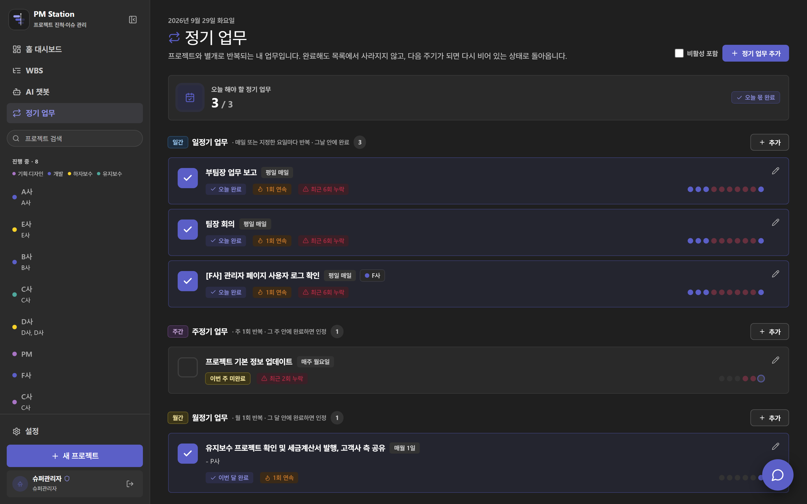
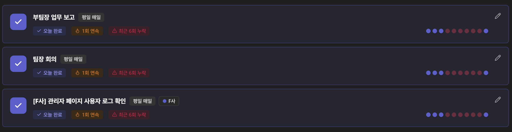
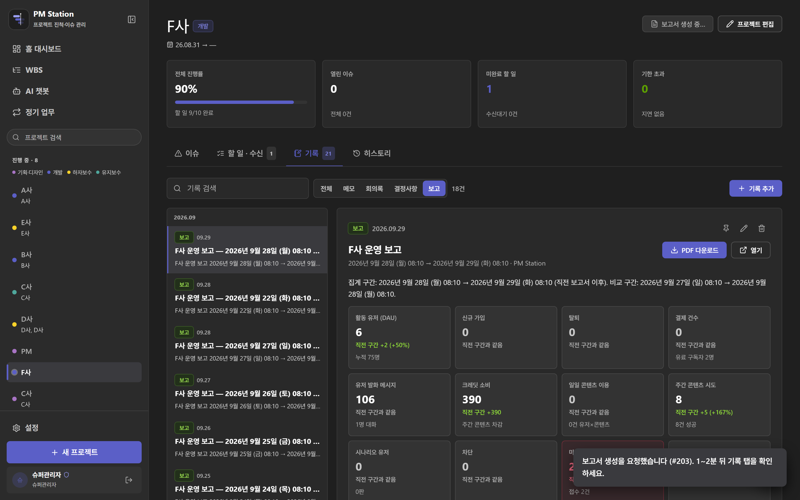
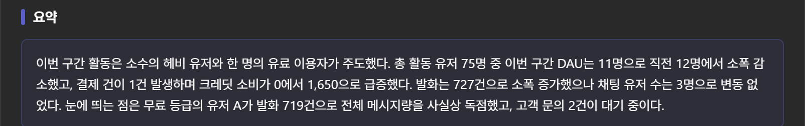
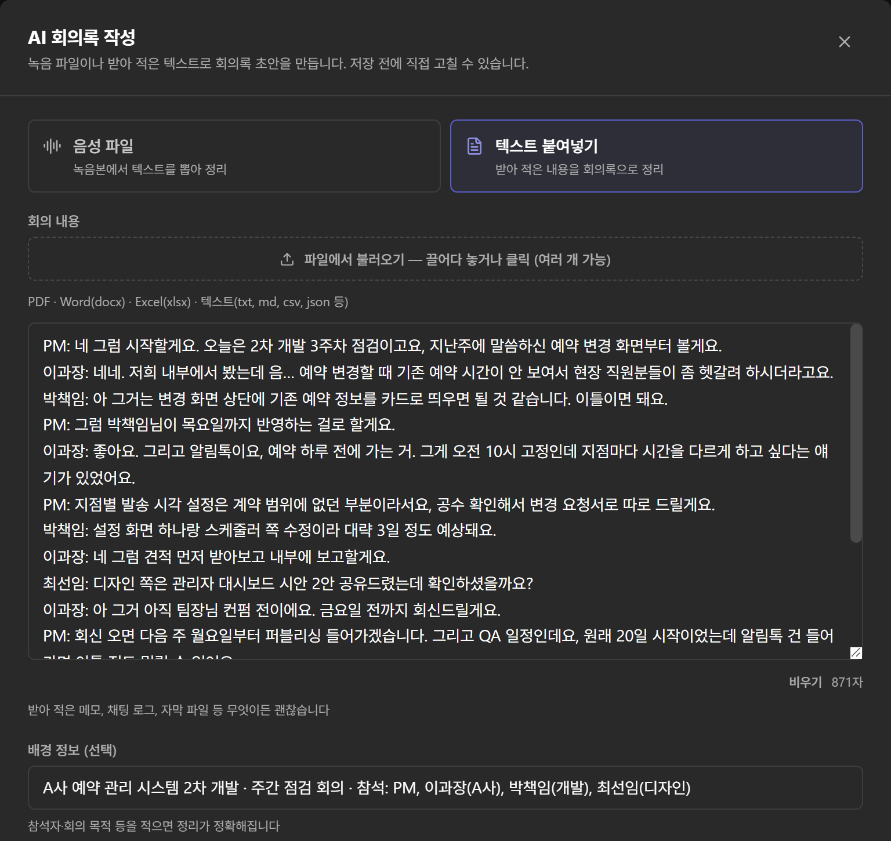
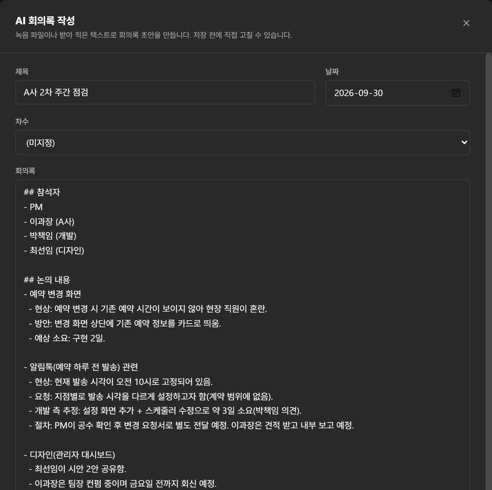
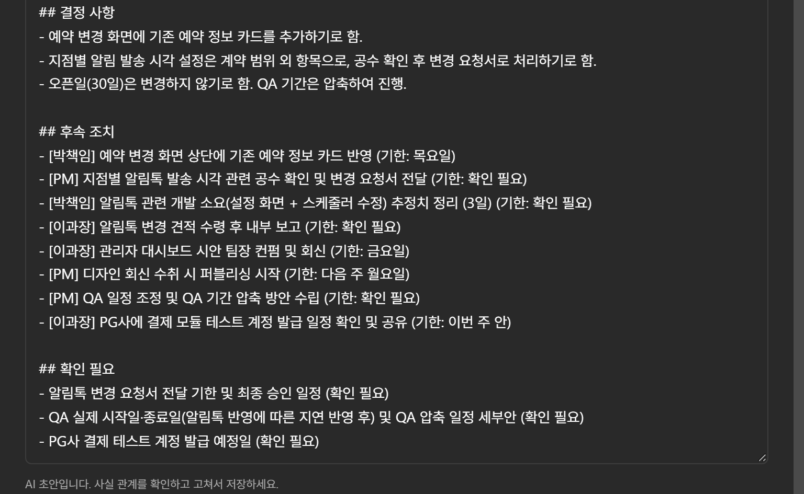

AI 도구를 도입한 경험이 아니라, 필요한 도구를 직접 설계하고 만들어 팀에 붙인 기록입니다.
기획 산출물을 만드는 방식과 프로젝트를 관리하는 방식, 두 구간을 바꾸고 지금도 매일 쓰고 있습니다.
PM Station
프로젝트 관리 · 알림 · 보고 · 회의록 자동화
마감 있는 모든 일이 한 화면에 모이고, 정해진 시각에 Teams로 먼저 알림이 갑니다. 운영 보고서는 매일 자동으로 발행됩니다.
PRD Toolkit
기획 산출물 자동 생성 파이프라인
계약서를 넣으면 기능 정의 → 페이지 맵 → 동작하는 HTML 시안 → 화면별 기획서 · 테스트케이스까지 한 번에 나옵니다.
본 문서의 PM Station 화면은 모두 실제 운영 중인 시스템입니다. 고객사명과 담당자명은 A사 · B사 · 홍길동 형태로 치환했습니다.
단, PRD Toolkit의 산출물은 고객사 기획서를 첨부할 수 없어 가상의 예시 프로젝트로 생성한 결과물입니다.
김석남 AI 서비스 기획 · PM
ramseok.github.io · rlatjrska1674@gmail.com
2026.09PORTFOLIO
OVERVIEW
한 장 요약
문제 · 해결 · 성과
1~2주 → 30분~1시간
착수 기획 산출물 초안 작성 시간
2개
직접 설계 · 구축해 운영 중인 시스템
5개 영역
업무 관리 · 알림 · 보고 · 회의록 · 문서 조회 통합
0건
도입에 쓴 외부 솔루션 비용
PM Station
프로젝트 관리 · 알림 · 보고 · 회의록 자동화 · 2026.08~
문제매뉴얼을 문서로 쌓아도 아무도 열어보지 않았고, 마감과 회신 대기는 메신저 · 엑셀 · 개인 메모로 흩어져 있었습니다.
해결PM 업무 전체를 한 서비스에서 처리하도록 다시 설계하고 Claude Code로 직접 구축했습니다.
성과매일 약 30분 걸리던 지표 보고가 자동 발행으로 바뀌고(월 약 10시간), 회의록 작성은 약 60분에서 15분 검토로 줄었습니다.
PRD Toolkit
계약서 → 기획서 · 화면 시안 자동 생성 · 2026.06~
문제Figma로 화면을 한 장씩 그려 초안까지 1~2주가 걸렸고, 그 구간이 전체 일정의 병목이었습니다.
해결계약서에서 기능을 읽어 시안 · 기획서 · 테스트케이스까지 한 번에 생성하는 파이프라인을 만들었습니다.
성과초안 작성이 30분~1시간으로 줄고, 전달은 링크 하나로 끝납니다.
공통 기준
두 시스템 모두 같은 판단에서 출발했습니다. 자동화의 성패는 기술이 아니라 "사람이 도구 앞으로 가야 하느냐, 도구가 사람에게 오느냐"에서 갈립니다.
접속해야만 쓸 수 있는 형태였다면 챗봇도 알림도 쓰이지 않았을 것입니다. 그래서 알림은 서버에서 먼저 보내고, 보고서는 사용자가 이미 보고 있는 자리에 자동으로 놓이게 했습니다.
문서 구성
페이지
내용
03 – 12
PM Station — 문제 · 해결 · 성과와 실제 화면 (대시보드 · WBS · 정기 업무 · 알림 · 운영 보고서 · 보고서 본문 · AI 회의록 · AI 챗봇 · 변경 이력)
스타트업 초기 멤버로 합류했을 때 사내에 업무 시스템이 없었습니다. 반복해서 발생하는 일을 매뉴얼로 만들어 문서화하고 워드에서 엑셀 시트로 옮겨 정리했지만,
문서는 늘어나는데 정작 필요한 순간에는 아무도 열어보지 않았습니다. 매뉴얼은 접근성이 없으면 없는 것과 같았습니다.
여기에 여러 프로젝트를 병렬로 맡다 보니 마감과 고객사 회신 대기가 메신저 · 엑셀 · 개인 메모로 흩어져 누락 위험이 컸고,
운영 중인 서비스의 지표는 매일 아침 관리자 페이지를 하나씩 눌러 확인한 뒤 오전 회의에서 구두로 보고했습니다. 회의록도 매번 직접 정리해야 했습니다.
해결
처음에는 Claude AI의 '프로젝트(Projects)' 기능에 'PM'이라는 프로젝트를 만들고, 매뉴얼화한 문서를 학습 데이터로 올려 질문 · 답변으로 찾아 쓰는 방식을 시도했습니다. 문서를 뒤지는 시간은 줄었지만 업무 관리 · 알림 · 보고는 여전히 따로 돌아갔고,
결국 PM 업무 전체를 한 서비스에서 처리하도록 다시 설계해 Claude Code로 직접 구축했습니다.
업무 관리 — 마감이 있는 모든 항목을 기한 초과 · 오늘 · 3일 내 · 받아야 할 것 네 갈래로 자동 분류하고, WBS로 프로젝트 → 차수 → 작업 단위 일정을 관리합니다.
알림 — 설정한 시각마다 서버가 Teams로 내가 담당인 프로젝트의 업무 리스트를 보냅니다. 앱을 꺼둬도 도착합니다.
정기 업무 — 일 · 주 · 월 주기 업무의 연속 달성과 누락을 추적합니다.
보고 자동화 — 운영 서비스의 어드민 데이터를 읽어 매일 오전 운영 보고서를 자동 발행하고 PDF까지 만듭니다.
AI 회의록 · 문서 챗봇 — 녹음 파일을 전사해 회의록 초안을 만들고, 매뉴얼은 질문하면 근거 문서와 함께 답합니다.
변경 이력 — 등록 · 변경 · 삭제가 DB 트리거로 자동 기록돼 "그때 일정이 왜 바뀌었는지"에 근거로 답합니다.
계정 · 권한 — 팀 단위로 넓혀 쓸 것을 고려해 회원가입 신청 → 관리자 승인, 프로젝트 참여 신청 → 승인 시 담당자 등록 흐름을 만들었습니다. 승인된 담당 프로젝트만 화면과 Teams 알림에 노출됩니다.
성과
지표 보고 매일 약 30분 → 0분 — 관리자 페이지를 눌러 확인하고 구두 보고를 준비하던 일이 매일 08:10 자동 발행(지표 12개 · 조치 필요 · PDF)으로 바뀌어, 영업일 기준 월 약 10시간을 덜어냈습니다.
회의록 1건 약 60분 → 약 15분 — 처음부터 쓰던 일이 초안 검토로 바뀌어 작성 시간이 약 75% 줄었습니다.
업무 확인 경로 4곳 → 1곳 — 메신저 · 엑셀 · 개인 메모 · 매뉴얼 문서로 흩어져 있던 마감 · 회신 대기 · 정기 업무를 병행 프로젝트 8건 기준으로 한 화면에서 봅니다.
하루 4회 자동 알림 — 서버가 정해진 시각에 담당 업무를 Teams로 먼저 보내, 사람이 챙기지 않아도 마감이 놓이지 않습니다.
매뉴얼 조회 건당 5~10분 → 1분 이내 — 문서를 찾아 여는 대신 질문하면 근거 문서와 함께 답이 나옵니다.
PM Station
03
PM STATION · 화면 01
흩어진 일을 한 화면으로
홈 대시보드
전체 화면홈 대시보드 — 왼쪽에 진행 중인 프로젝트 8건, 가운데에 이번 주 마감과 오늘의 정기 업무, 아래에 지금 처리해야 할 항목이 놓입니다. 고객사명은 A사 · B사로 치환했습니다.확대네 갈래 분류와 알림 시각 — 마감이 있는 항목은 기한 초과 · 오늘 마감 · 3일 내 · 받아야 할 것으로 자동 분류됩니다.
오른쪽 위 버튼 아래의 "매일 오전 9시 · 오후 2시 · 오후 3시 · 오후 4시"가 Teams로 알림이 나가는 시각입니다.
"받아야 할 것"은 제가 할 일이 아니라 고객사 회신 · 자료를 기다리는 항목입니다. 내가 놓친 일만큼이나 상대가 늦는 일이 일정을 밀기 때문에, 대기 중인 건을 별도 갈래로 세웠습니다.
PM Station
04
PM STATION · 화면 02
누가 언제 무엇을 끝내는지
WBS · 간트 / 프로젝트 상세
전체 화면WBS · 간트 — 프로젝트 → 차수 → 작업으로 쪼개고, 상위 진척률은 하위 작업에서 기간만큼 가중해 굴려 올립니다.
전체 진척률 · 지연 · 7일 내 마감 · 마일스톤 · 일정 미정을 상단에 두어, 여러 프로젝트의 일정 충돌을 먼저 보게 했습니다.확대프로젝트 상세의 세 레인 — 할 일을 내가 직접 처리할 일 / 이슈에 대한 후속조치 / 고객사 · 팀에서 받아야 할 자료로 분리했습니다.
"받아야 할 것"을 별도 레인으로 세워 두지 않으면 대기 중인 건이 반드시 새기 때문입니다.
WBS는 엑셀로 내보내 고객사 보고에 그대로 쓰고, 여기서 관리하는 할 일과 이슈는 마감일이 있으면 자동으로 알림 대상에 편입됩니다.
일정표와 알림이 다른 문서에 있으면 둘 중 하나는 반드시 낡기 때문에, 같은 데이터를 두 화면으로 보여주는 구조로 잡았습니다.
PM Station
05
PM STATION · 화면 03
반복되는 일을 의지로 버티지 않기
정기 업무

전체 화면정기 업무 — 프로젝트와 별개로 반복되는 일을 일간 · 주간 · 월간으로 나눠 관리합니다. 완료해도 목록에서 사라지지 않고 다음 주기가 되면 다시 비어 있는 상태로 돌아옵니다.

확대연속 달성 · 누락 추적 — 항목마다 오늘 완료 · 연속 횟수 · 최근 누락 횟수가 표시되고, 오른쪽 점으로 최근 이행 이력을 봅니다. 습관처럼 빠지는 일을 눈에 보이게 만든 장치입니다.
부팀장 업무 보고, 팀장 회의, 담당 서비스의 사용자 로그 확인처럼 매일 반복되지만 어디에도 기록되지 않던 일을 여기에 올렸습니다. 이 항목들도 마감 있는 일과 똑같이 알림 대상에 편입됩니다.
PM Station
06
PM STATION · 화면 04
도구가 사람에게 먼저 갑니다
Teams 알림 연동
확대내 Teams 알림 — 사내에서 쓰던 협업툴 Teams의 채널 주소를 등록하면, 설정한 시각에 내가 담당인 프로젝트의 업무 리스트가 그곳으로 갑니다.
앱을 꺼둬도 서버가 보내기 때문에, 사용자가 시스템에 접속하지 않아도 업무가 먼저 찾아옵니다.확대알림 시각 — 발송 시각을 직접 정합니다. 기본값은 하루 4회(오전 9시 · 오후 2시 · 3시 · 4시)이고, 여기서 정한 시각이 브라우저 알림과 Teams 알림에 함께 적용됩니다.
업무 누락을 막는 장치 중 가장 효과가 큰 것이 이 구간이었습니다. 대시보드는 열어야 보이지만, 알림은 열지 않아도 도착합니다.
출근 직후 · 오후 업무 전환 시점 · 퇴근 전으로 시각을 잡아, 하루 안에서 일이 밀리는 지점마다 목록이 다시 눈앞에 오도록 맞췄습니다.
PM Station
07
PM STATION · 화면 05
매일 아침의 구두 보고를 없앤 자리
운영 보고서 자동 발행

전체 화면운영 보고서 — 프로젝트 상세의 기록 탭에 매일 자동으로 쌓입니다. 집계 구간은 직전 보고서 이후 ~ 현재로 잡히고, 같은 길이의 직전 구간과 비교합니다. 생성된 보고서는 PDF로 내려받을 수 있습니다.확대지표와 증감 — 활동 유저 · 신규 가입 · 탈퇴 · 결제 건수 · 발화 메시지 · 크레딧 소비 등 핵심 지표를 직전 구간과 대조해 증감을 함께 보여줍니다. 수치 뒤 한 줄에는 누적값과 원인 단서를 붙였습니다.
이전에는 이 숫자들을 보려고 매일 아침 관리자 페이지를 하나씩 눌러 확인한 뒤 오전 회의에서 구두로 보고했습니다.
지금은 정해진 시각에 보고서가 먼저 만들어져 있고, 저는 확인과 판단만 합니다. 어드민 API가 일시적으로 실패해도 보고서 자체는 생성되도록 장애 내성을 넣었습니다.
PM Station
08
PM STATION · 화면 05
숫자 다음에 해석과 할 일까지
운영 보고서 본문

요약구간 요약 — 지표 타일 바로 아래에서 이번 구간을 서너 문장으로 먼저 정리합니다. 전체 수치가 누구의 활동에서 나왔는지까지 짚어 줍니다.조치 · 인사이트오늘 할 일과 해석 — 미답변 문의 · 탈퇴처럼 당일 처리할 항목을 먼저 띄우고, 지표가 바뀐 곳마다
"해석 → 다음 행동"을 붙입니다. 보고서를 읽고 곧바로 무엇을 할지 정할 수 있게 한 구조입니다. (인사이트 7건 중 앞 3건)장애 내성일부 수집 실패 표시 — 어드민 API 한 곳이 실패해도(HTTP 500) 보고서는 멈추지 않고,
어느 항목이 비었는지와 무엇을 확인해야 하는지 적어 둡니다. 맨 아래에는 집계 기준과 용어 정의가 매번 함께 붙습니다.
보고서 한 건의 순서는 지표 → 요약 → 유저 · 결제 · 대화 · 콘텐츠 · 문의 상세 → 조치 필요 → 인사이트 → 수집 실패 → 집계 기준입니다.
사용자 이름 · 아이디는 유저 A~K, 서비스명은 F사로 치환해 촬영했고, 사용자 문의 원문이 담긴 부분은 싣지 않았습니다.
PM Station
09
PM STATION · 화면 06
회의가 끝나면 초안이 먼저 있습니다
AI 회의록

입력녹음 파일 또는 텍스트 — 녹음본(mp3 · m4a · wav 등)을 올리면 전사부터 하고, 받아 적은 메모 · 채팅 로그 · PDF · Word · Excel도 넣을 수 있습니다. 참석자 · 회의 목적을 적으면 정리가 더 정확해집니다.

초안제목 · 날짜 · 참석자 · 논의 내용 — 말버릇과 잡담을 걷어내고 주제별로 현상 · 방안 · 소요를 나눠 적습니다. 저장 전에 바로 고칠 수 있는 편집 상태로 나옵니다.

확대결정 · 후속 조치 · 확인 필요 — 담당자와 기한이 나온 말은 모두 [담당] 할 일 (기한) 형태로 옮겨지고,
녹취만으로 판단할 수 없는 것은 "확인 필요"로 따로 모입니다. 회의가 끝난 직후 공유할 액션 아이템이 이미 정리돼 있습니다.
녹취에 없는 내용은 쓰지 않도록 규칙을 정해 두었고, 저장할 때 입력 원문을 기록 하단에 함께 남길 수 있어 초안과 원문을 대조할 수 있습니다.
회의록 작성은 초안을 검토하고 고치는 일로 바뀌었습니다. (예시는 가상의 회의 내용으로 생성)
PM Station
10
PM STATION · 화면 07
매뉴얼을 찾지 않고 물어봅니다
AI 챗봇 (사내 문서 기반)
전체 화면AI 챗봇 — 매뉴얼화한 사내 문서를 학습 데이터로 올려, 앱 심사 준비물이나 세금계산서 양식 같은 질문에 항목별로 정리해 답합니다.
과도기에 Claude AI의 'PM' 프로젝트로 쓰던 문서 검색 방식을 시스템 안의 기능으로 흡수한 부분입니다.확대근거 문서 표시 — 답변 아래에 어느 매뉴얼에서 나온 내용인지 근거 문서를 붙여 보여줍니다.
화면 맨 아래 안내처럼 등록된 학습 데이터에 없는 내용은 답하지 않도록 제한해, 업무에 쓸 수 없는 그럴듯한 답을 막았습니다.
PM Station
11
PM STATION · 화면 08
누가 언제 무엇을 바꿨는지
변경 이력
전체 화면변경 이력 — 등록 · 변경 · 삭제가 DB 트리거로 자동 기록됩니다. 어떤 할 일의 진척률이 언제 0에서 100으로 바뀌었는지까지 남아,
"그때 일정이 왜 바뀌었죠?"에 근거로 답할 수 있습니다. 차수 · 이슈 · 할 일 · 기록 · 프로젝트별로 걸러 봅니다.확대변경 목록 — 항목마다 무엇이 어떤 값에서 어떤 값으로 바뀌었는지(예: progress 0 → 100)와 시각이 남습니다. 오른쪽 위에서 차수 · 이슈 · 할 일 · 기록 · 프로젝트별로 거를 수 있습니다.
무엇이 남는가
누가 · 언제 · 무엇을 — 할 일 · 이슈 · 차수 · 기록 · 프로젝트의 등록 · 변경 · 삭제가 사람이 따로 적지 않아도 남습니다.
바뀌기 전과 후 — 진척률 · 기한 · 담당자처럼 바뀐 항목은 이전 값과 이후 값을 함께 보여 줍니다.
보고의 근거 — 일정이 밀린 이유를 기억이 아니라 기록으로 설명할 수 있고, 고객사와 범위를 다툴 때도 근거가 됩니다.
PM Station
12
PROJECT 02
PRD Toolkit
계약서 → 기획서 · 화면 시안 자동 생성
이 장의 화면에 대하여
실제 고객사 프로젝트의 기획서는 비밀유지 대상이라 첨부할 수 없습니다. 이어지는 산출물은 모두
가상의 예시 프로젝트 「무지개 일기(가칭)」를 파이프라인에 넣어 생성한 결과물입니다. 도구의 동작과 결과물 형태를 보여주기 위한 것이며, 특정 고객사의 내용이 아닙니다.
문제
기획서를 Figma로 한 장씩 그렸습니다. 규모에 따라 다르지만 초안까지 보통 1~2주가 걸렸고, 적은 인원이 여러 프로젝트를 동시에 맡는 구조에서 이 구간이 전체 일정의 병목이었습니다.
전달도 번거로웠습니다. PDF로 변환 · 병합해 보내야 했고, 링크로 보내도 보기 불편하다는 고객사 의견이 있었습니다.
게다가 기획서 · 시안 · 고객 피드백 · 테스트케이스가 각각 다른 문서와 메신저에 흩어져, 어떤 피드백이 어느 화면의 어느 항목에 대한 것인지 매번 다시 맞춰야 했습니다.
해결
이미 확정된 문서인 계약서를 출발점으로 삼아, 기능 정의 → 페이지 맵 → 화면 시안 → 화면별 기획서 · 테스트케이스 → 고객 공유 문서까지 이어지는 파이프라인을 설계했습니다.
동작하는 HTML 시안 — 그림이 아니라 클릭과 페이지 이동이 실제로 되는 화면으로 만들어집니다.
리뷰 레이어 — 시안에서 Ctrl + / 를 누르면 그 화면의 기획서 · 고객사 코멘트 · 테스트케이스가 한 패널에서 열립니다.
디자인 기준 통일 — 고객사 디자인 요구사항을 DESIGN.md로 정리해 전체 화면에 같은 토큰으로 적용합니다.
품질 게이트 — 만든 주체가 스스로 통과 판정을 내리지 못하게 하고, 완료 판정은 파일 개수가 아니라 내용으로 검사합니다.
링크 전달 — Netlify · Vercel로 자동 배포해 링크 하나로 보내고, 고객 피드백은 Supabase에 남습니다.
성과
초안까지 걸리던 시간이 1~2주에서 30분~1시간 내외로 줄었습니다(최초 산출물 기준이며 이후 협의에 따른 수정은 별도).
전달은 링크 하나로 끝나 변환 · 병합 작업이 사라졌고, 피드백이 화면 단위로 쌓이면서 재확인 커뮤니케이션이 없어졌습니다.
이전 → 이후
구간
이전
지금
초안 작성
Figma로 화면을 한 장씩 작도 · 1~2주
30분~1시간 내외로 일괄 생성
고객 전달
PDF 변환 · 병합 후 첨부
자동 배포된 링크 하나
피드백
메신저 · 메일 · 별도 문서로 분산
화면에 붙어 상태로 관리
검수
테스트케이스를 별도 문서로 관리
시안 안에서 Pass · Fail 기록
PRD Toolkit
13
PRD TOOLKIT · 산출물 01
계약서 한 건에서 나온 결과물
시안 허브
01
계약서 입력
→
02
기능 정의
→
03
페이지 맵
→
04
HTML 시안
→
05
기획서 · TC
→
06
링크 배포
아래는 위 흐름의 04~05단계 산출물입니다. 가상의 예시 프로젝트 「무지개 일기(가칭)」를 넣어 생성했습니다.
산출물시안 허브 — 예시 프로젝트 한 건에서 사용자 화면 26 · 관리자 화면 7 · 기능 44개(F1~F44)가 생성됐습니다.
화면 카드마다 설명과 관련 기능 번호, 실제 파일 경로가 함께 붙어 기능과 화면이 1:1로 대응됩니다. 상단 안내처럼 모든 화면에서 Ctrl + / 로 리뷰 패널이 열립니다.
단계마다 역할이 다른 전담 에이전트 9종을 두고, 계약 해석처럼 판단이 무거운 일과 화면 양산, 기계적 검사에 각각 다른 모델을 배치해 비용과 속도를 맞췄습니다.
상위 산출물이 수정되면 하위 단계의 검토 상태가 자동으로 무효화돼 문서 간 어긋남을 막습니다.
PRD Toolkit · 가상 예시 프로젝트
14
PRD TOOLKIT · 산출물 02
화면을 보면서 그 화면의 기획서를
화면별 기획서
산출물화면별 기획서 — 왼쪽은 클릭과 페이지 이동이 실제로 동작하는 시안, 오른쪽은 Ctrl + / 로 열리는 패널입니다.
URL · 대상 · 관련 기능이 머리에 오고, 화면 구성은 영역 · 내용 · 관련 기능 표로 정리됩니다. 개발팀이 그대로 읽는 문서입니다.
기획서와 시안을 따로 보내면 고객사는 두 문서를 번갈아 맞춰 봐야 했습니다.
지금은 보고 있는 화면이 곧 문서의 기준점이라, "어느 화면의 어느 항목"을 설명하는 데 드는 대화가 사라졌습니다.
PRD Toolkit · 가상 예시 프로젝트
15
PRD TOOLKIT · 산출물 03–04
검수와 피드백을 도구 안으로
테스트케이스 · 고객사 코멘트
산출물테스트케이스 — 사전조건 · 절차 · 기대결과가 화면 단위로 붙고 Pass · Fail · 미확인 상태를 그 자리에서 바꿉니다. Fail 항목에는 개발사와 고객사가 각각 코멘트를 남깁니다.산출물고객사 코멘트 — 고객사가 화면을 보면서 바로 수정 요청을 남기고 개발사가 답글을 답니다. 각 건은 검토중 · 수정중 · 완료 · 논의 필요로 관리되고 파일도 첨부됩니다.
PRD Toolkit · 가상 예시 프로젝트
16
PRD TOOLKIT · 산출물 05–06
운영 화면과 디자인 기준까지
관리자 시안 · 디자인 가이드
산출물관리자 대시보드 시안 — 사용자 화면뿐 아니라 운영자가 보는 화면까지 생성됩니다. 지표 카드 · 처리할 일 · 추이 그래프 · 상태별 분포를 구성해
운영자가 무엇을 보고 무엇을 처리하는지를 화면으로 합의합니다. (표시된 수치는 예시값)산출물디자인 가이드 — 고객사 디자인 요구사항과 레퍼런스를 DESIGN.md의 토큰으로 정리하고, 그 값이 화면에 실제로 어떻게 적용되는지 실물로 보여주는 문서입니다.
콘셉트 · 컬러 · 타이포 · 버튼 · 접근성 · 금지 사항까지 11개 절로 고정해 주관적 피드백으로 되돌아가는 재작업을 줄입니다.
PRD Toolkit · 가상 예시 프로젝트
17
CLOSING
일하는 순서
문제 발견 → 도구 제작 → 확인과 개선
두 시스템 모두 아이디어나 보고서로 끝난 제안이 아니라 제가 매일 여는 도구입니다.
문제를 발견하면 문서로 남기는 데서 멈추지 않고, 동작하는 형태로 만들어 업무에 붙이고, 실제로 쓰이는지 확인하며 고쳐 왔습니다.
STEP 01
어디에서 시간이 새는지 찾기
→
STEP 02
효과 · 실행 가능성으로 우선순위 정리
→
STEP 03
동작하는 형태로 만들어 붙이기
→
STEP 04
전후를 기록해 다음 과제 근거로
도구가 사람에게 가야 합니다
두 시스템을 만들며 세운 기준
접속해야만 쓸 수 있는 형태였다면 챗봇도 알림도 쓰이지 않았을 것입니다. 그래서 알림은 서버에서 Teams로 먼저 보내고, 보고서는 사용자가 이미 보고 있는 자리에 자동으로 놓이게 했습니다.
문서로 끝내지 않습니다
매뉴얼에서 시스템까지
매뉴얼을 문서로 쌓는 방식은 끝내 해결이 되지 않았습니다. 한 번 실패한 접근을 버리고 다시 설계해, 지금은 업무 관리 · 알림 · 보고 · 회의록 · 문서 조회가 한 곳에서 끝납니다.
반복되는 일은 사람이 기억하는 대신 시스템이 기억하게 만들었습니다.
PM Station · PRD Toolkit — 설계부터 배포 · 운영까지 직접
SI 프로젝트에서 도메인이 전혀 다른 수많은 고객사를 만나 왔습니다. 프로젝트에 들어가기 전 가장 먼저 한 일은 늘 같았습니다.
그 조직이 실제로 어떻게 일하는지, 어느 지점에서 불편을 호소하는지를 파악하는 것이었습니다.
새로운 조직에서도 같은 순서로 일하겠습니다. 각 부서의 구성원들이 어떻게 일하고 있고, 어떤 불편을 느끼고 있으며, 어디에서 시간이 새는지 먼저 찾고,
가장 빨리 체감되는 것부터 만들어 붙이고, 전후를 기록해 다음 과제의 근거로 쓰겠습니다.
김석남 · AI 서비스 기획 · PM · ramseok.github.io · rlatjrska1674@gmail.com